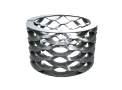
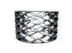
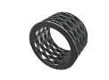

Пружины волновые
Изготовление волновых пружин на заказ партиями от 1-й штуки за 1-3 дня.
Выполним по разнообразным параметрам, чертежам или образцу, фото, эскизу.
- 
- 
- 
Изготовление и производство волновых пружин
ООО «Индустриал Спрингс» предоставляет услуги по производству волновых пружин на заказ по всей территории Украины. С помощью укомплектованного собственного производства, импортного оборудования и штата опытных специалистов, а также доступных цен и отличного качества продукции, мы завоевали доверие наших покупателей.
Уже более 10 лет мы изготавливаем пружины с разными размерами и техническими характеристиками. Благодаря своей компактности, прочности и устойчивости к деформации, волновые пружины широко используют для подшипников, поршневых насосов, водопроводных кранов, предохранительных клапанов и прочих механических изделий.
Используя во время производства качественные стали (легированные, углеродистые, специальные теплостойкие и нержавеющие) ,а также специализированное оборудование, ”Индустриал Спрингс” создает пружины по ГОСТам, которые сохраняют пружинящие свойства детали на протяжении всего периода эксплуатации.
Заказать и купить волновые пружины вы можете по доступной розничной и оптовой цене. По всем производственным вопросам можно получить подробную бесплатную консультацию у наших специалистов, оставив заявку через форму заказа или позвонив по телефону.